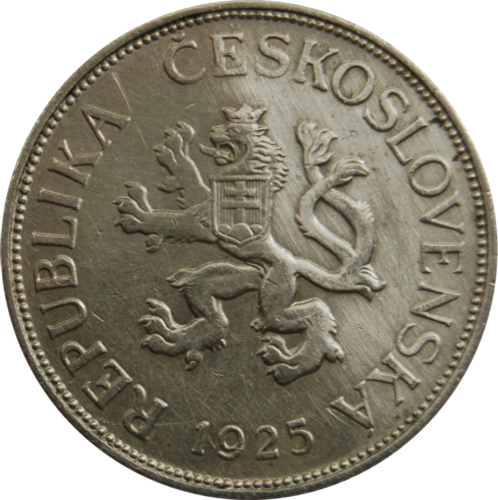
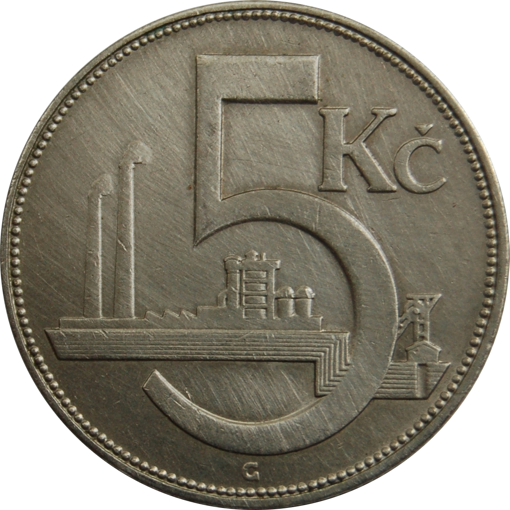

Entangle qubits
with JavaScript
A light introduction to Quantum Computing
Miroslav Bajtoš
Lead Node.js Engineer @ IBM
Image courtesy of IBM Research [CC BY-ND 2.0]
A
01000001
 
superpozice
(superposition)
provázanost
(entanglement)
Chinese satellite beats distance record for
quantum entanglement
[newscientist.com, 2017-06-15]
Now, entanglement has been preserved in pairs of photons sent by the Chinese satellite Micius to ground stations separated by 1203 kilometres — a new record.
Kvantové algoritmy
vyhledávaní: Grover
faktorizace: Shor
(a mnoho dalších)
Dekohese
(quantum decoherence)
Image courtesy of IBM Research [CC BY-ND 2.0]
Detekce & oprava chyb
spolehlivý počítač =~ 1 000 - 100 000 qubitů
Současný stav
Hardware
- IBM: 50 quibits
- Intel: 49 qubits
- Google: 72 qubits
- Rigetti: 16 qubits
Software
- OpenQASM (assembler od IBM)
- Qiskit (IBM)
- Cirq (Google)
- ProjectQ (ETH Zürich)
- Quil (assembler od Rigetti)
- Forest SDK (Rigetti)
Python & Qiskit
Kostra programu
Import funkcí
from qiskit import IBMQ, QuantumCircuit, QuantumRegister, \
ClassicalRegister, BasicAer, execute
from qiskit.providers.ibmq import least_busy
from qiskit.visualization import plot_histogram
Příprava
Definice kvantových a klasických registrů
q = QuantumRegister(1)
c = ClassicalRegister(1)
Vytvoření obvodu
circ = QuantumCircuit(q, c)
Kvantový algoritmus
circ.measure(q, c)
Vizualizace algoritmu
diag = circ.draw(output="mpl")
diag.savefig("img/skeleton-circuit.png", format="png")

Konfigurace backendu
Simulátor
backend = BasicAer.get_backend('qasm_simulator')
(POZOR! Simulátor "statevector" je k ničemu.)
Skutečný hardware v cloudu
IBMQ.load_accounts(hub=None)
large_enough_devices = IBMQ.backends(filters=lambda x:
not x.configuration().simulator)
backend = least_busy(large_enough_devices)
Jdeme na to!
job = execute(circuits, backend, shots=shots, max_credits=3)
result = job.result()
Zpracování výsledků
counts = result.get_counts(circ)
print(counts)
# {'0': 1024}
diag = plot_histogram(counts)
diag.savefig("img/skeleton-histogram.png", format="png")
Výsledky ze simulátoru

Výsledky z hardware (ibmqx2)

Brána X (NOT)
Kvantový algoritmus
circ.x(q[0])
circ.measure(q, c)

Výsledky ze simulátoru

Výsledky z hardware (ibmqx2)

Uvolňování energie
(energy relaxation)

Hadamard
(superpozice)
Kvantový algoritmus
circ.h(q[0])
circ.measure(q, c)

Výsledky ze simulátoru

Výsledky z hardware (ibmqx2)
Rozfázování
(dephasing)

Bell state
(provázanost)
Příprava
(potřebujeme víc registrů)
q = QuantumRegister(2)
c = ClassicalRegister(2)
Kvantový algoritmus
circ.h(q[0])
circ.cx(q[0], q[1])
circ.measure(q, c)

Výsledky ze simulátoru

Výsledky z hardware (ibmqx2)

Budoucnost
Nové kvantové algoritmy
(odolnější vůči chybám HW)
Rychlejší řešení pro
těžké problémy
simulace přírody/chemie
strojové učení
Koexistence s klasickými počítači
FPU, GPU, QPU
Dobrodružství na několik dekád
to samé říkají už posledních 20-30 let ;-)
Vyzkoušejte si!
IBM Q Experience
16 qubitů naživo v Cloudu
Hello Quantum
Sada hlavolamů v mobilní aplikaci
Další zdroje
Zdrojáky
github.com/bajtos/2019-QuantumPython/tree/master/src
Dokumentace Qiskit
Image courtesy of Abhijay Achatz [CC BY-SA 2.0] https://www.flickr.com/photos/frattel/8558044789
Děkuji!
slajdy: bajtos.net/PyQ